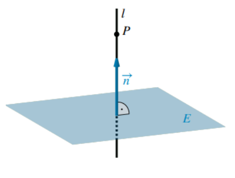
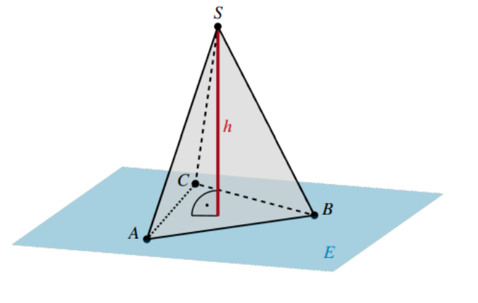

Abstand Punkt – Ebene¶
Der Abstand eines Punktes von einer Ebene ist die Länge der Senkrechten vom Punkt auf die Ebene. Diese Senkrechte verläuft parallel zum Normalenvektor der Ebene.
1. Lotfußpunktverfahren¶
Beim Lotfußpunktverfahren wird der Abstand geometrisch bestimmt.

Vorgehensweise¶
Gegeben sei eine Ebene \(E\) mit Normalenvektor \(\overrightarrow{n}\) und ein Punkt \(P(p_1|p_2|p_3)\).
- Lotgerade durch den Punkt aufstellen
-
Lotfußpunkt bestimmen. Die Geradengleichung wird in die Ebenengleichung eingesetzt und nach \(\lambda\) aufgelöst. Das Einsetzen von \(\lambda\) in \(l\) gibt die Koordinaten des Lotfußpunktes \(F\) an.
-
Abstand berechnen
Beispiel¶
Die Grundfläche der Pyramide mit Spitze \(S(1|1|7)\) liegt in der Ebene \(E:\ x_1+x_2+3x_3-1=0\). Bestimmen Sie die Höhe der Pyramide.

Lösung¶
Die Höhe der Pyramide entspricht dem Abstand der Spitze \(S\) von der Ebene \(E\). Ein Normalenvektor der Ebene ist
Lotgerade durch die Spitze: Die Lotgerade verläuft durch \(S\) und besitzt als Richtungsvektor den Normalenvektor \(\overrightarrow{n}\):
Damit gilt für die Koordinaten eines Punktes auf der Lotgeraden:
Bestimmung des Lotfußpunktes: Der Lotfußpunkt \(F\) ist der Schnittpunkt der Lotgeraden mit der Ebene \(E\). Dazu werden die Geradengleichungen in die Ebenengleichung eingesetzt:
Einsetzen in die Lotgerade liefert den Lotfußpunkt:
Damit ist
Berechnung der Höhe: Die Höhe ist die Länge der Strecke \(SF\):
Die Höhe der Pyramide beträgt \[ h=2\sqrt{11}~\mathrm{LE}. \]
2. Hessesche Normalform¶
Eine Ebene in Normalenform besitzt die Darstellung
Dabei ist
- \(\overrightarrow{a}\) der Ortsvektor eines Punktes der Ebene,
- \(\overrightarrow{n}\) ein Normalenvektor der Ebene.
Ist der Normalenvektor normiert, also
so liegt die Ebene in Hessescher Normalform vor:
3. Abstandsberechnung mit der Hesseschen Normalform¶
Formel¶
Sei
eine Ebene in der hesseschen Normalenform und \(P\) ein Punkt. Es gilt:
Alternativ:
wenn die Ebene in Normalform bzw. Koordinatenform (\(ax+by+cz+d=0\)) gegeben ist.
Schema (ohne Formelmerkung)¶
Sei die Ebene \(E\) in Normalenform
oder in Koordinatenform
gegeben. Dabei ist darauf zu achten, dass die Ebenengleichung in der Koordinatenform auf der rechten Seite die Null besitzt.
Zur Berechnung des Abstandes eines Punktes von der Ebene wird folgendes Schema verwendet:
- Normalenvektor der Ebene bestimmen oder direkt ablesen
- Länge des Normalenvektors berechnen
- Koordinaten des Punktes in die Ebenengleichung einsetzen
- Den Betrag des Ergebnisses bilden
- Durch die Länge des Normalenvektors dividieren
Beispiel¶
Gesucht ist der Abstand des Punktes \(P(8|-5|2)\) von der Ebene
Lösung¶
Skalarprodukt:
Betrag:
Länge des Normalenvektors:
Damit ergibt sich
Beispiel: Punkte einer Geraden mit gegebenem Abstand zu einer Ebene¶
Gegeben ist die Gerade
sowie die Ebene
Gesucht sind alle Punkte der Geraden, die von der Ebene den Abstand
besitzen.
Lösung¶
Ein allgemeiner Punkt der Geraden besitzt die Form
Anwendung der Abstandsformel (Koordinatenform: \(x+2y+3z-9=0\)):
Vereinfachung:
Da \(|7|=|-7|=7\), ergeben sich zwei Fälle:
Einsetzen in die Geradengleichung liefert:
Die Punkte der Geraden mit dem Abstand \(\frac{1}{2}\sqrt{14}~\mathrm{LE}\) von der Ebene sind \[ P_1(2|4|2) \quad \text{und} \quad P_2\left(-\frac{4}{5}\,\middle|\,-\frac{8}{5}\,\middle|\,2\right). \]